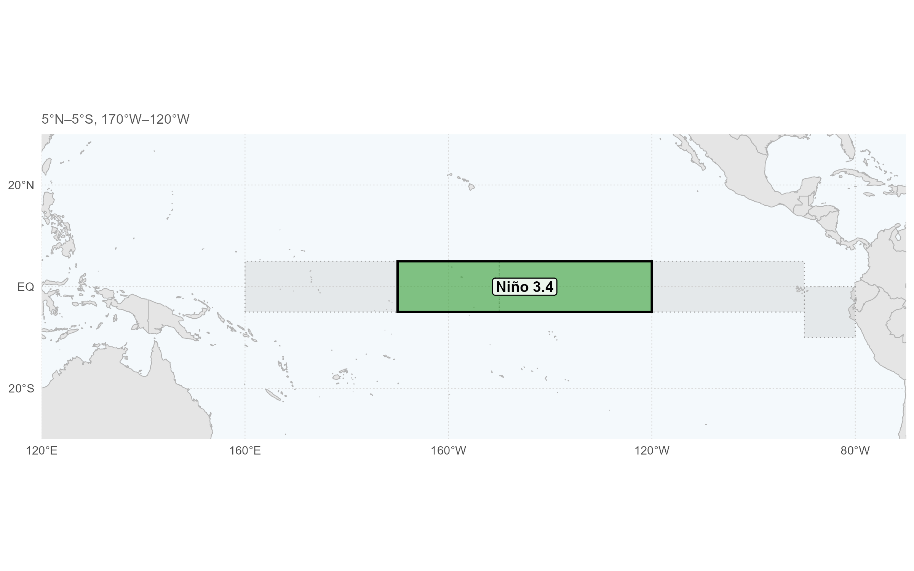
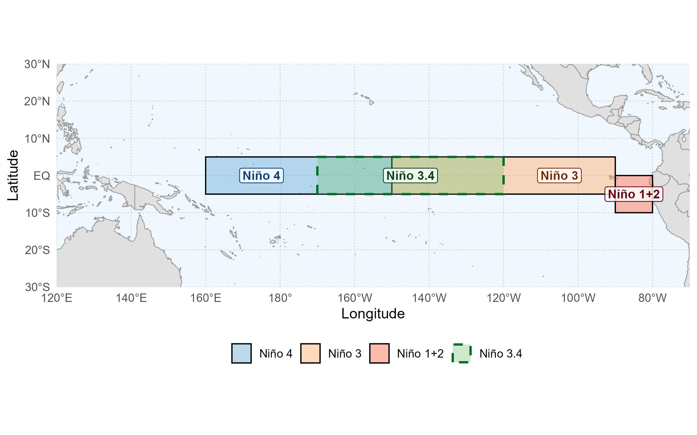

Classificação atual
—
Status oficial do CPC
Monitoramento e síntese dos principais indicadores oceânicos e atmosféricos do El Niño–Oscilação Sul (ENSO), reunindo situação atual, séries históricas e impactos globais.
Uma iniciativa da plataforma CIDACS Clima.
Elaborado por Jean dos Reis.
Veja, em um só lugar, o alerta mais recente do CPC e os principais indicadores oceânicos e atmosféricos usados para acompanhar a evolução do ENSO.
Distribuição espacial das anomalias relativas mensais de SST no Pacífico e demais oceanos, atualizada pelo Climate Prediction Center.

O rastreador ENSO do Pacific Regional Climate Centre resume o estado do ENSO de acordo com diferentes instituições globais. As metodologias de cada instituição podem ser consultadas em Critérios de ENSO.

Desde fevereiro de 2026, o Climate Prediction Center da NOAA utiliza o Relative Oceanic Niño Index (RONI) como índice de referência para o monitoramento e a previsão oficiais do ENSO. O ONI permanece disponível como índice tradicional para comparação histórica.
| Ano | Mês central | Período | RONI (°C) | Classe |
|---|
Compare os episódios de El Niño e La Niña identificados pelo RONI e pelo ONI. Passe o mouse sobre um evento para ver os detalhes.
Critério: pelo menos cinco janelas consecutivas com RONI ≥ +0,5°C para El Niño ou RONI ≤ −0,5°C para La Niña. A classe exibida corresponde ao maior valor absoluto de RONI atingido durante cada episódio.
| Início | Fim | Tipo | Intensidade | Pico | Janelas consecutivas |
|---|
Selecione uma das quatro regiões de monitoramento para explorar a evolução das anomalias relativas de temperatura da superfície do mar.

Componente atmosférica do ENSO baseada na diferença padronizada de pressão ao nível do mar entre Tahiti e Darwin.
Veja os padrões globais típicos de temperatura e precipitação associados a El Niño e La Niña em DJF e JJA, conforme as figuras oficiais da NOAA Climate.gov.

Um índice climático é uma medida, frequentemente numérica, usada para representar um padrão ou estado do sistema climático. O monitoramento do ENSO combina indicadores oceânicos e atmosféricos para acompanhar sua evolução.
El Niño e La Niña são as fases quente e fria do ENSO. Elas envolvem mudanças nas temperaturas da superfície do mar do Pacífico equatorial e uma resposta associada da circulação atmosférica tropical.
Desde fevereiro de 2026, o RONI é o índice utilizado pelo Climate Prediction Center da NOAA para o monitoramento e a previsão oficiais do ENSO. Ele usa a média móvel de três meses do índice Niño 3.4 relativo: da anomalia de SST em Niño 3.4 é subtraída a anomalia média da SST tropical entre 20°N e 20°S; em seguida, a diferença é ajustada para preservar a variância do índice Niño 3.4 original.
O ONI é o índice tradicional utilizado historicamente pela NOAA para acompanhar o ENSO. Ele corresponde à média móvel de três meses das anomalias de temperatura da superfície do mar na região Niño 3.4. O CPC continua atualizando a série para preservar a continuidade histórica e permitir comparações com o RONI.
As regiões Niño são áreas do Pacífico equatorial usadas para monitorar anomalias de temperatura da superfície do mar. Este painel utiliza os produtos Relative OISSTv2.1 do CPC, com período-base 1991–2020, nas escalas mensal e semanal.

| Região | Área |
|---|---|
| Niño 4 | 5°N–5°S · 160°E–150°W |
| Niño 3.4 | 5°N–5°S · 170°W–120°W |
| Niño 3 | 5°N–5°S · 150°W–90°W |
| Niño 1+2 | 0–10°S · 90°W–80°W |
O SOI representa a componente atmosférica do ENSO a partir da diferença de pressão ao nível do mar entre Tahiti e Darwin. O CPC informa que as anomalias usadas no cálculo são desvios em relação ao período-base 1981–2010.
O MSD é o desvio-padrão mensal da diferença entre Tahiti e Darwin padronizados. Valores negativos persistentes são geralmente associados a El Niño, enquanto valores positivos persistentes são geralmente associados a La Niña.
As instituições utilizam conjuntos de critérios próprios para emitir alertas, avisos e declarar condições de El Niño ou La Niña. A síntese abaixo apresenta os critérios descritos pelo Pacific Regional Climate Centre ENSO Tracker.
Um alerta de El Niño (La Niña) é emitido quando se considera que o sistema climático está se encaminhando na direção do El Niño (La Niña) por meio do acúmulo de calor (frio) anômalo na superfície ou subsuperfície do Oceano Pacífico equatorial, uma redução (aumento) dos ventos alísios na bacia e a expectativa de que essas condições continuem por pelo menos alguns meses.
Um alerta de El Niño (La Niña) é emitido quando se considera que o sistema climático está se aproximando dos limiares de El Niño (La Niña), como aquecimento (resfriamento) anômalo na região NINO3.4 de pelo menos +0,5 °C (-0,5 °C), redução (aumento) consistente dos ventos alísios na bacia, como eventos de rajadas de vento oeste (leste), um valor do Índice de Oscilação Sul (SOI) do NIWA inferior (superior) a -0,5 (0,5), uma resposta na atmosfera, como uma mudança nos padrões convectivos, consistente com o desenvolvimento de um El Niño (La Niña), e uma expectativa de que essas condições continuem por pelo menos alguns meses. Normalmente, o NIWA emite um alerta quando a maioria dessas condições é observada por pelo menos três meses consecutivos, mas cada caso está sujeito a uma análise especializada por cientistas climáticos do NIWA.
Diz-se que as condições de El Niño (ou La Niña) estão ocorrendo quando a maioria das seguintes condições é satisfeita:
Um alerta de El Niño (La Niña) é emitido quando as condições são favoráveis ao desenvolvimento do fenômeno nos próximos três a quatro meses, com probabilidade igual ou superior a 50%. Um dos seguintes critérios precisa ser atendido:
O alerta de El Niño (La Niña) é emitido quando as condições são favoráveis ao desenvolvimento do fenômeno El Niño (La Niña) nos próximos três a quatro meses, com probabilidade igual ou superior a 60%. Todos os seguintes critérios precisam ser atendidos:
O El Niño (La Niña) é declarado quando o fenômeno está quase desenvolvido e com previsão de duração pelos próximos três meses. Todos os seguintes critérios precisam ser atendidos:
Um alerta de El Niño (La Niña) é emitido quando o estado climático atual é neutro ou La Niña (El Niño) em declínio, o limiar análogo do SOI é atingido ou um aquecimento (resfriamento) subsuperficial significativo foi observado no Pacífico equatorial ocidental ou central, e um terço ou mais dos modelos climáticos pesquisados mostram aquecimento (resfriamento) sustentado de pelo menos 0,8 °C (-0,8 °C) nas regiões NINO3 ou NINO3.4 do Pacífico até o final do inverno ou primavera.
Um alerta de El Niño (La Niña) é emitido quando uma clara tendência de aquecimento (resfriamento) é observada nas regiões NINO3 ou NINO3.4 do Pacífico durante os últimos três a seis meses, os ventos alísios foram mais fracos (mais fortes) do que a média no Pacífico equatorial ocidental ou central durante dois dos últimos três meses, a média de dois meses do SOI é -7 (7) ou menor (maior), e a maioria dos modelos climáticos pesquisados mostra aquecimento (resfriamento) sustentado para pelo menos 0,8 °C (-0,8 °C) nas regiões NINO3 ou NINO3.4 até o final do inverno ou primavera.
As condições de El Niño (La Niña) são consideradas presentes quando as temperaturas da superfície do mar nas regiões NINO3 ou NINO3.4 do Pacífico estão 0,8 °C (-0,8 °C) mais quentes (frias) do que a média, os ventos alísios estiveram mais fracos (fortes) do que a média no Pacífico equatorial ocidental ou central durante três dos últimos quatro meses, o Índice de Oscilação Sul (IOS) de três meses é de -7 (7) ou inferior (superior), e a maioria dos modelos climáticos analisados mostra aquecimento (resfriamento) sustentado de pelo menos 0,8 °C (-0,8 °C) acima (abaixo) da média nas regiões NINO3 ou NINO3.4 do Pacífico até o final do ano.
As condições de El Niño (La Niña) existem quando se observa uma anomalia positiva (negativa) da temperatura da superfície do mar de 0,5 °C (-0,5 °C) ou superior durante um mês na região NINO3.4 do Oceano Pacífico equatorial, quando se prevê que o limiar do Índice Oceânico Niño de 3 meses seja atingido e quando se observa uma resposta atmosférica tipicamente associada ao El Niño (La Niña) sobre o Oceano Pacífico equatorial. Um alerta de El Niño ou La Niña é emitido quando as condições são favoráveis ao desenvolvimento de El Niño ou La Niña nos próximos seis meses, enquanto um aviso de El Niño ou La Niña é emitido quando as condições de El Niño ou La Niña são observadas e prevê-se que continuem.
Conjuntos de dados, documentos e figuras oficiais utilizados no monitor.
Relative Oceanic Niño Index, referência operacional atual do CPC para monitoramento e previsão oficiais do ENSO; utilizado no cartão-resumo, no gráfico principal e na identificação dos episódios ENSO.
Acessar dados ↗Oceanic Niño Index tradicional, mantido como série comparativa e histórica.
Acessar dados ↗Monthly Relative OISSTv2.1, período-base 1991–2020, para Niño 1+2, Niño 3, Niño 4 e Niño 3.4.
Acessar dados ↗Weekly Relative OISSTv2.1, período-base 1991–2020, para as quatro regiões Niño.
Acessar dados ↗Southern Oscillation Index mensal padronizado do CPC, calculado a partir da pressão ao nível do mar em Tahiti e Darwin.
Acessar dados ↗Média móvel de três meses do SOI disponibilizada pelo Climate Prediction Center.
Acessar dados ↗Descrição oficial do CPC sobre o cálculo, a padronização e o período-base 1981–2010.
Ver metodologia ↗Figura-síntese do Pacific Regional Climate Centre e critérios de NIWA, APCC, BoM e NOAA apresentados no ENSO Tracker.
Ver fonte ↗Mapas esquemáticos de impactos típicos de El Niño e La Niña em DJF e JJA. Autoria: Rebecca Lindsey; revisão: Tom Di Liberto; NOAA Climate.gov, 9 fev. 2016.
Ver fonte ↗ENSO Diagnostic Discussion do Climate Prediction Center, utilizado no alerta apresentado no topo do monitor.
Abrir boletim ↗